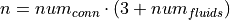
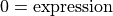
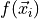
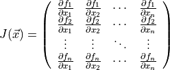
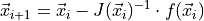
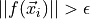
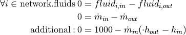

Networks¶
The network class handles preprocessing, solving and postprocessing. We will walk you through all the important steps.
Setup¶
Network container¶
The TESPy network contains all data of your plant, which in terms of the calculation is represented by a nonlinear system of equations. The system variables of your TESPy network are:
mass flow,
pressure,
enthalpy and
the mass fractions of the network’s fluids.
The solver will solve for these variables. As stated in the introduction the list of fluids is passed to your network on creation. If your system includes fluid mixtures, you should always make use of the value ranges for the system variables. This improves the stability of the algorithm. Try to fit the boundaries as tight as possible, for instance, if you know that the maximum pressure in the system will be at 10 bar, use it as upper boundary.
Note
Value ranges for pure fluids are not required as these are dealt with automatically.
from tespy.networks import Network
fluid_list = ['CO2', 'H2O', 'N2', 'O2', 'Ar']
my_plant = Network(fluids=fluid_list)
my_plant.set_attr(p_unit='bar', h_unit='kJ / kg')
my_plant.set_attr(p_range=[0.05, 10], h_range=[15, 2000])
Note
It is possible to specify the fluid property back-end of the network fluids by adding the name of the back-end in front of the fluid’s name within the list of fluids of your network. For example:
from tespy.networks import Network
fluid_list = ['CO2', 'BICUBIC::H2O', 'INCOMP::DowQ']
Network(fluids=fluid_list)
If you do not specify a back-end, the default back-end HEOS
will be used (as for CO2). In this example, H2O will be
using the BICUBIC back-end and DowQ the back-end for
incompressible fluids INCOMP. For an overview of the back-ends
available please refer to the
fluid property section.
It is not possible to use the same fluid in different back-ends!
Printouts and logging¶
TESPy comes with an inbuilt logger. If you want to keep track of debugging-messages, general information, warnings or errors you should enable the logger. At the beginning of your python script e.g. add the following lines:
from tespy.tools import logger
import logging
logger.define_logging(
log_path=True, log_version=True,
screen_level=logging.INFO, file_level=logging.DEBUG
)
The log-file will be saved to ~/.tespy/log_files/ by default. All
available options are documented in the
API.
Prior to solving the network there are options regarding the console printouts for the calculation progress. Specify, if you want to enable or disable convergence progress printouts:
# disable iteration information printout
myplant.set_attr(iterinfo=False)
# enable iteration information printout
myplant.set_attr(iterinfo=True)
Adding connections¶
As seen in the introduction, you will have to create your networks from the components and the connections between them. You can add connections directly or via subsystems using the corresponding methods:
myplant.add_conns()
myplant.add_subsys()
Note
You do not need to add the components to the network, as they are inherited via the added connections. After having set up your network and added all required elements, you can start the calculation.
Busses: Energy Connectors¶
Another type of connection is the bus: Busses are connections for massless transfer of energy e.g. in turbomachines or heat exchangers. They can be used to model motors or generators, too. Add them to your network with the following method:
myplant.add_busses()
You will learn more about busses and how they work in this part.
Start calculation¶
You can start the solution process with the following line:
myplant.solve(mode='design')
This starts the initialisation of your network and proceeds to its calculation. The specification of the calculation mode is mandatory, This is the list of available keywords:
modeis the calculation mode ('design'-calculation or'offdesign'-calculation).init_pathis the path to the network folder you want to use for initialisation.design_pathis the path to the network folder which holds the information of your plant’s design point.max_iteris the maximum amount of iterations performed by the solver.min_iteris the minimum amount of iterations before a solution can be accepted (given the convergence criterion is satisfied).init_onlystop after initialisation (True/False).init_previoususe starting values from previous simulation (True/False).use_cudause cuda instead of numpy for matrix inversion, speeds up simulation in some cases by outsourcing calculation to graphics card. For more information please visit the cupy documentation.always_all_equationsyou can skip recalculation of converged equations in the calculation process if you specify this parameter to beFalse. Default value isTrue.
There are two calculation modes available ('design' and
'offdesign'), which are explained in the subsections below. If you
choose offdesign as calculation mode the specification of a
design_path is mandatory.
The usage of an initialisation path is always optional but highly recommended,
as the convergence of the solution process will be improved, if you provide
good starting values. If you do not specify an init_path, the
initialisation from saved results will be skipped.
init_only=True usually is used for debugging. Or, you could use this
feature to export a not solved network, if you want to do the parametrisation
in .csv-files rather than your python script.
The init_previous parameter can be used in design and offdesign
calculations and works very similar to specifying an init_path.
In contrast, starting values are taken from the previous calculation. Specifying
the ìnit_path overwrites init_previous.
Design mode¶
The design mode is used to design your system and is always the first calculation of your plant. The offdesign calculation is always based on a design calculation! Obviously as you are designing the plant the way you want, you are flexible to choose the parameters to specify. However, you can not specify parameters that are based on a design case, as for example the isentropic efficiency characteristic function of a turbine or a pump. Specifying a value for the efficiency is of course possible.
Offdesign mode¶
The offdesign mode is used to calculate the performance of your plant, if
parameters deviate from the plant’s design point. This can be partload
operation, operation at different temperature or pressure levels etc.. Thus,
before starting an offdesing calculation you have to design your plant first.
By stating 'offdesign' as calculation mode, components and
connections will switch to the offdesign mode. This means that all
parameters provided as design parameters will be unset and all parameters
provided as offdesign parameters will be set instead. You can specify a
connection’s or component’s (off-)design parameters using the
set_attr method.
For example, for a condenser you would usually design it to a maximum terminal temperature difference, in offdesign the heat transfer coefficient is selected. The heat transfer coefficient is calculated in the preprocessing of the offdesign case based on the results from the design-case. Of course, this applies to all other parameters in the same way. Also, the pressure drop is a result of the geometry for the offdesign case, thus we swap the pressure ratios with zeta values.
mycomponent.set_attr(design=['ttd_u', 'pr1', 'pr2'],
offdesign=['kA', 'zeta1', 'zeta2'])
Note
Some parameters come with characteristic functions based on the design case
properties. This means, that e.g. the isentropic efficiency of a turbine
is calculated as function of the actual mass flow to design mass flow
ratio. You can provide your own (measured) data or use the already existing
data from TESPy. All standard characteristic functions are available at
tespy.data.
For connections it works in the same way, e.g. write
myconnection.set_attr(design=['h'], offdesign=['T'])
if you want to replace the enthalpy with the temperature for your offdesign. The temperature is a result of the design calculation and that value is then used for the offdesign calculation in this example.
To solve your offdesign calculation, use:
myplant.solve(mode='offdesign', design_path='path/to/network_designpoint')
Solving¶
A TESPy network can be represented as a linear system of nonlinear equations, consequently the solution is obtained with numerical methods. TESPy uses the n-dimensional Newton–Raphson method to find the systems solution, which may only be found, if the network is parameterized correctly. The number of variables n is

.The algorithm requires starting values for all variables of the system, thus an initialisation of the system is run prior to calculating the solution. High quality initial values are crutial for convergence speed and stability, bad starting values might lead to instability and diverging calculation can be the result. There are different levels for the initialisation.
Initialisation¶
The initialisation is performed in the following steps.
General preprocessing:
check network consistency and initialise components (if network topology is changed to a prior calculation only).
perform design/offdesign switch (for offdesign calculations only).
preprocessing of offdesign case using the information from the
design_pathargument.
Finding starting values:
fluid propagation.
fluid property initialisation.
initialisation from previous simulation run (
ìnit_previous).initialisation from .csv (setting starting values from
init_pathargument).
The network check is used to find errors in the network topology, the
calculation can not start without a successful check. For components, a
preprocessing of some parameters is necessary. It is performed by the
comp_init method of the components. You will find the methods in the
components module. The design/offdesign switch is
described in the network setup section. For offdesign calculation the
design_path argument is required. The design point information is
extracted from that path in preprocessing. For this, you will need to export
your network’s design point information using:
myplant.save('path/for/export')
Starting value generation for your calculations starts with the fluid
propagation. The fluid propagation is a very important step in the
initialisation. Often, you will specify the fluid at one point of the
network only, all other connections are missing an initial information on the
fluid, if you are not using an init_path. The fluid propagation will
push/pull the specified fluid through the network. If you are using combustion
chambers these will be starting points and a generic flue gas composition will
be calculated prior to the propagation. You do not necessarily need to state a
starting value for the fluid at every point of the network.
Note
If the fluid propagation fails, you often experience an error, where the fluid property database can not find a value, because the fluid is ‘nan’. Providing starting values manually can fix this problem.
If available, the fluid property initialisation uses the user specified starting
values or the results from the previous simulation. Otherwise generic starting
values are generated on basis of which components a connection is linked to.
If you do not want to use the results of a previous calculation, you need to
specify init_previous=False on the Network.solve method call.
Last step in starting value generation is the initialisation from a saved
network structure. In order to initialise your calculation from the
init_path, you need to provide the path to the saved/exported network.
If you specify an init_path TESPy searches through the connections file
for the network topology and if the corresponding connection is found, the
starting values for the system variables are extracted from the connections
file.
Note
The files do not need to contain all connections of your network. You can
build your network step by step and initialise the existing parts of your
network from the init_path. Be aware that a change within the fluid
vector does not allow this practice! If you plan to use additional fluids
in parts of the network you have not touched until now, you will need to
state all fluids from the beginning.
Algorithm¶
In this section we will give you an introduction to the solving algorithm implemented.
Newton–Raphson method¶
The Newton–Raphson method requires the calculation of residual values for the equations and of the partial derivatives to all system variables (Jacobian matrix). In the next step the matrix is inverted and multiplied with the residual vector to calculate the increment for the system variables. This process is repeated until every equation’s result in the system is “correct”, thus the residual values are smaller than a specified error tolerance. All equations are of the same structure:

calculate the residuals

Jacobian matrix J

derive the increment

while

Note
You have to provide the exact amount of required parameters (neither less nor more) and the parametrisation must not lead to linear dependencies. Each parameter you set for a connection and each energy flow you specify for a bus will add one equation to your system. On top, each component provides a different amount of basic equations plus the equations provided by your component specification.
For example, consider a pump: Total mass flow as well as the fluid mass
fractions of the mixture entering the pump will be identical at the outlet. The
pump delivers two mandatory equations. If you additionally specify, e.g. the
power  to be 1000 W, the set of equations will look like this:
to be 1000 W, the set of equations will look like this:

Convergence stability¶
One of the main downsides of the Newton–Raphson method is that the initial stepwidth is very large and that it does not know physical boundaries, for example mass fractions smaller than 0 and larger than 1 or negative pressure. Also, the large stepwidth can adjust enthalpy or pressure to quantities that are not covered by the fluid property databases. This would cause an inability e.g. to calculate a temperature from pressure and enthalpy in the next iteration of the algorithm. In order to improve convergence stability, we have added a convergence check.
The convergence check manipulates the system variables after the increment has been added. This manipulation has four steps, the first two are always applied:
Cut off fluid mass fractions smaller than 0 and larger than 1. This way a mass fraction of a single fluid components never exceeds these boundaries.
Check, whether the fluid properties of pure fluids are within the available ranges of CoolProp and readjust the values if not.
The next two steps are applied, if the user did not specify an
init_path and the iteration count is lower than 3, thus in the first
three iteration steps of the algorithm only. In other cases this convergence
check is skipped.
Fox mixtures: check, if the fluid properties (pressure, enthalpy and mass flow) are within the user specified boundaries (
p_range, h_range, m_range) and if not, cut off higher/lower values.Check the fluid properties of the connections based on the components they are connecting. For example, check if the pressure at the outlet of a turbine is lower than the pressure at the inlet or if the flue gas composition at a combustion chamber’s outlet is within the range of a “typical” flue gas composition. If there are any violations, the corresponding variables are manipulated. If you want to look up, what exactly the convergence check for a specific component does, look out for the
convergence_checkmethods in thetespy.components module.
In a lot of different tests the algorithm has found a near enough solution after the third iteration, further checks are usually not required.
Note
It is possible to improve the convergence stability manually when using
pure fluids. If you know the fluid’s state is liquid or gaseous prior to
the calculation, you may provide the according value for the keyword e.g.
myconn.set_attr(state='l'). The convergence check manipulates the
enthalpy values so that the fluid is always in the desired state at that
point. For an example see the release information of
version 0.1.1. Please note, that
you need to adjust the other parts of the script to the latest API.
Calculation speed improvement¶
For improvement of calculation speed, the calculation of specific derivatives
is skipped if possible. If you specify always_all_equations=False for
your simulation, equations may also be skipped: There are two criteria for
equations and one criterion for derivatives that are checked for calculation
intensive operations, e.g. whenever fluid property library calls are necessary:
For component equations the recalculation of the residual value is skipped,
only if you specified
always_all_equations=Falseandif the absolute of the residual value of that equations is lower than the threshold of
1e-12in the iteration before andthe iteration count is not a multiple of 4.
Connections equations are skipped
only if you specified
always_all_equations=Falseandif the absolute of the residual value of that equations is lower than the threshold of
1e-12in the iteration before andthe iteration count is not a multiple of 2 and
the specified property is not temperature.
The calculation of derivatives is skipped, if the change of the corresponding
variable was below a threshold of 1e-12 in the iteration before.
Again, this does not apply to temperature value specification, as especially
when using fluid mixtures, the convergence stability is very sensitive to
these equations and derivatives.
Note
In order to make sure, that every equations is evaluated at least twice, the minimum amount of iterations before convergence can be accepted is at 4.
Troubleshooting¶
In this section we show you how you can troubleshoot your calculation and list
up common mistakes. If you want to debug your code, make sure to enable the
logger and have a look at the log-file at ~/.tespy/ (or at your
specified location).
First of all, make sure your network topology is set up correctly, TESPy will prompt an Error, if not. TESPy will prompt an error, too, if you did not provide enough or if you provide too many parameters for your calculation, but you will not be given an information which specific parameters are under- or overdetermined.
Note
Always keep in mind, that the system has to find a value for mass flow, pressure, enthalpy and the fluid mass fractions. Try to build up your network step by step and have in mind, what parameters will be determined by adding an additional component without any parametrisation. This way, you can easily determine, which parameters are still to be specified.
When using multiple fluids in your network, e.g.
fluids=['water', 'air', 'methane'] and at some point you want to have
water only, you still need to specify the mass fractions for both air and
methane (although beeing zero) at that point
fluid={'water': 1, 'air': 0, 'methane': 0}. Also, setting
fluid={water: 1}, fluid_balance=True will still not be sufficient, as
the fluid_balance parameter adds only one equation to your system.
If you are modeling a cycle, e.g. the clausius rankine cylce, you need to make a cut in the cycle using the cycle_closer or a sink and a source not to overdetermine the system. Have a look in the heat pump tutorial to understand why this is important and how it can be implemented.
If you have provided the correct number of parameters in your system and the calculations stops after or even before the first iteration, there are four frequent reasons for that:
Sometimes, the fluid property database does not find a specific fluid property in the initialisation process, have you specified the values in the correct unit?
Also, fluid property calculation might fail, if the fluid propagation failed. Provide starting values for the fluid composition, especially, if you are using drums, merges and splitters.
A linear dependency in the Jacobian matrix due to bad parameter settings stops the calculation (overdetermining one variable, while missing out on another).
A linear dependency in the Jacobian matrix due to bad starting values stops the calculation.
The first reason can be eliminated by carefully choosing the parametrization. A linear dependency due to bad starting values is often more difficult to resolve and it may require some experience. In many cases, the linear dependency is caused by equations, that require the calculation of a temperature, e.g. specifying a temperature at some point of the network, terminal temperature differences at heat exchangers, etc.. In this case, the starting enthalpy and pressure should be adjusted in a way, that the fluid state is not within the two-phase region: The specification of temperature and pressure in a two-phase region does not yield a distinct value for the enthalpy. Even if this specific case appears after some iterations, better starting values often do the trick.
Another frequent error is that fluid properties move out of the bounds given by the fluid property database. The calculation will stop immediately. Adjusting pressure and enthalpy ranges for the convergence check might help in this case.
Note
If you experience slow convergence or instability within the convergence process, it is sometimes helpful to have a look at the iteration information. This is printed by default and provides information on the residuals of your systems’ equations and on the increments of the systems’ variables. Maybe it is only one variable causing the instability, its increment is much larger than the increment of the other variables?
Did you experience other errors frequently and have a workaround/tips for resolving them? You are very welcome to contact us and share your experience for other users!
Postprocessing¶
A postprocessing is performed automatically after the calculation finished. You have further options:
Automatically create a documentation of your model.
Print the results to prompt (
print_results()).Save the results in structure of .csv-files (
save()).Generate fluid property diagrams with an external tool.
Automatic model documentation¶
Using the automatic TESPy model documentation you can create an overview of all input parameters, specifications and equations as well as characteristics applied in LaTeX format. This enables high
transparency,
readability and
reproducibility.
In order to use the model documentation, you need to import the corresponding method and pass your network information. At the moment, you can the following optional arguments to the method:
path: Basepath, where the LaTeX data and figures are exported to.filename: Filename of the report.fmt: A formatting dictionary, for a sample see below.
from tespy.tools import document_model
fmt = {
'latex_body': True, # adds LaTeX body to compile report out of the box
'include_results': True, # include parameter specification and results
'HeatExchanger': { # for components of class HeatExchanger
'params': ['Q', 'ttd_l', 'ttd_u', 'pr1', 'pr2']}, # change columns displayed
'Condenser': { # for components of class HeatExchanger
'params': ['Q', 'ttd_l', 'ttd_u', 'pr1', 'pr2']
'float_fmt': '{:,.2f}'}, # change float format of data
'Connection': { # for Connection instances
'p': {'float_fmt': '{:,.4f}'}, # change float format of pressure
's': {'float_fmt': '{:,.4f}'},
'h': {'float_fmt': '{:,.2f}'},
'params': ['m', 'p', 'h', 's'] # list results of mass flow, ...
'fluid': {'include_results': False} # exclude results of fluid composition
},
'include_results': True, # include results
'draft': False # disable draft mode
}
document_model(mynetwork, fmt=fmt)
Note
Specified values are displayed in any case. The selection of which parameters to show and which to exclude only applies to results.
After having exported the LaTeX code, you can simply use \input{}
in your main LaTeX document to include the documentation of your model. In
order to compile correctly you need to load the following LaTeX packages:
graphicx
float
hyperref
booktabs
amsmath
units
cleveref
longtable
For generating different file formats, like markdown, html or restructuredtext, you could try the pandoc library. For examples, of how the reports look you can have a look at the examples repository, or just try it yourself :).
This feature is introduced in version 0.4.0 and still subject to changes. If you have any suggestions, ideas or feedback, you are very welcome to submit an issue on our GitHub or even open a pull request.
Results printing¶
To print the results in your console use the print_results() method.
It will print tables containing the component, connection and bus properties.
Some of the results will be colored, the colored results indicate
if a parameter was specified as value before calculation.
if a parameter is out of its predefined value bounds (e.g. efficiency > 1).
if a component parameter was set to
'var'in your calculation.
The color for each of those categories is different and might depend on the console settings of your machine. If you do not want the results to be colored you can instead call the method the following way:
myplant.print_results(colored=False)
If you want to limit your printouts to a specific subset of components,
connections and busses, you can specify the printout parameter to block
individual result printout.
mycomp.set_attr(printout=False)
myconn.set_attr(printout=False)
mybus.set_attr(printout=False)
If you want to prevent all printouts of a subsystem, add something like this:
# connections
for c in mysubsystem.conns.values():
c.set_attr(printout=False)
# components
for c in mysubsystem.comps.values():
c.set_attr(printout=False)
Save your results¶
If you choose to save your results the specified folder will be created containing information about the network, all connections, busses, components and characteristics.
In order to perform calculations based on your results, you can access all components’ and connections’ parameters:
The easiest way to access the results of one specific component looks like this
eff = mycomp.eta_s.val # isentropic efficiency of mycomp
P = mycomp.P.val
and similar for connection parameters:
mass_flow = myconn.m.val # value in specified network unit
mass_flow_SI = myconn.m.val_SI # value in SI unit
mass_fraction_oxy = myconn.fluid.val['O2'] # mass fraction of oxygen
specific_volume = myconn.vol.val # value in specified network unit
specific_entropy = myconn.s.val # value in specified network unit
volumetric_flow = myconn.v.val # value in specified network unit
specific_exergy = myconn.ex_physical # SI value only
On top of that, you can access pandas DataFrames containing grouped results for the components, connections and busses. The instance of class Network provides a results dictionary.
# key for connections is 'Connection'
results_for_conns = myplant.results['Connection']
# keys for components are the respective class name, e.g.
results_for_turbines = myplant.results['Turbine']
results_for_heat_exchangers = myplant.results['HeatExchanger']
# keys for busses are the labels, e.g. a Bus labeled 'power input'
results_for_mybus = myplant.results['power input']
The index of the DataFrames is the connection’s or component’s label.
results_for_specific_conn = myplant.results['Connection'].loc['myconn']
results_for_specific_turbine = myplant.results['Turbine'].loc['turbine 1']
results_for_component_on_bus = myplant.results['power input'].loc['turbine 1']
The full list of connection and component parameters can be obtained from the respective API documentation.
Creating fluid property diagrams¶

Figure: logph diagram of NH3 with a simple heat pump cycle.¶

Figure: Ts diagram of NH3 with a simple heat pump cycle.¶
CoolProp has an inbuilt feature for creating fluid property diagrams.
Unfortunately, the handling is not very easy at the moment. We recommend using
fluprodia (Fluid Property Diagram) instead. You can create and customize
different types of diagrams for all pure and pseudo-pure fluids available in
CoolProp. In order to plot your process data into a diagram, you can use the
get_plotting_data method of each component. The method returns a
dictionary, that can be passed as **kwargs to the
calc_individual_isoline method of a fluprodia
FluidPropertyDiagram object. The fluprodia documentation provides
examples of how to plot a process into different diagrams, too. For more
information on fluprodia have a look at the
online documentation. You can
install the package with pip.
pip install fluprodia
Note
The plotting data a returned from the get_plotting_data as a
nested dictionary. The first level key contains the connection id of the
state change (change state from incoming connection to outgoing
connection). The table below shows the state change and the respective id.
component |
state from |
state to |
id |
|---|---|---|---|
components with one inlet and one outlet only |
|
|
|
class HeatExchanger and subclasses |
|
|
|
|
|
|
|
class ORCEvaporator |
|
|
|
|
|
|
|
|
|
|
|
class Merge |
|
|
|
|
|
|
|
… |
… |
… |
|
class Drum |
|
|
|
All other components do not return any information as either there is no change in state or the state change is accompanied by a change in fluid composition.
Network reader¶
The network reader is a useful tool to import networks from a data structure using .csv-files. In order to re-import an exported TESPy network, you must save the network first.
myplant.save('mynetwork')
This generates a folder structure containing all relevant files defining your network (general network information, components, connections, busses, characteristics) holding the parametrization of that network. You can re-import the network using following code with the path to the saved documents. The generated network object contains the same information as a TESPy network created by a python script. Thus, it is possible to set your parameters in the .csv-files, too. The imported network is handled identically as a manually created network.
from tespy.networks import load_network
imported_plant = load_network('path/to/mynetwork')
imported_plant.solve('design')
Note
Imported busses, components and connections are accessible by their label,
e.g. imported_plant.busses['total heat output'],
imported_plant.get_comp('condenser') and
imported_plant.get_conn('myconnectionlabel') respectively. If
you did not provide labels for your connections, by default, the
connection’s label will be according to this principle:
'source-label:source-id_target-label:target-id', where source and
target are the labels of the connected components.